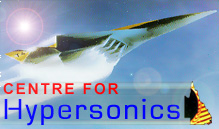

Experimental Facilities
T4 Shock Tunnel Facility
HyShot Project
Force Measurement in Impulse Facilities
Boundary Layer Transition Research
my.UQ
Faculty of Engineering
School of Engineering
Mechanical Engineering
Centre for Hypersonics
CFH Reference Database
CFH Wiki